CPU缓存体系对Go程序的影响
小菜刀最近在medium上阅读了一篇高赞文章《Go and CPU Caches》，其地址为https://teivah.medium.com/go-and-cpu-caches-af5d32cc5592，感觉收获颇多。小菜刀在该文章的基础上做了些修改和扩展，整理出来分享给读者朋友们。
CPU缓存体系
现代计算机处理器架构多数采用对称多处理系统（Symmetric multiprocessing system，SMS）。在这个系统中，每一个核心都当成是独立的处理器，多处理器被连接到同一个共享的主存上，并由单一操作系统来控制。
为了加速内存访问，处理器有着不同级别的缓存，分别是 L1、L2 和 L3。确切的体系结构可能因供应商、处理器模型等而异。目前最常见的架构是把 L1 和 L2 缓存内嵌在 CPU 核心本地，而把 L3 缓存设计成跨核心共享。
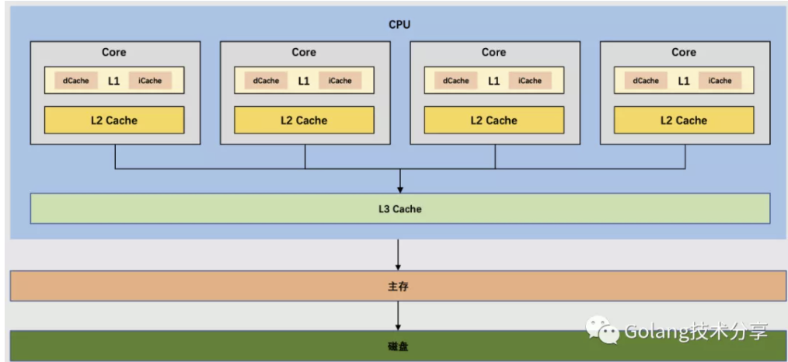
一个CPU通常包含多个核心，每个CPU核心拥有L1 Cache和 L2 Cache，在L1 Cache中又分为dCache（数据缓存）和iCache（指令缓存），同时多核心共享L3 Cache。
越靠近CPU核心的缓存，其容量越小，但是访问延迟越低。
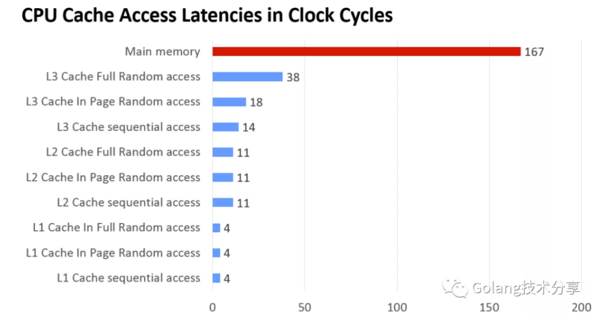
当然，这些具体的数字会因处理器模型而异。不过，可以得出明显的结论就是，处理器访问L1缓存的速度远远快过直接访问主存，它们至少相差数十倍。
CPU从主存中读取数据至Cache时，并非单个字节形式进行读取，而是以连续内存块的方式进行拷贝，拷贝块内存的单元被称为缓存行（Cache Line）。这样做的理论依据是著名的局部性原理。
- 时间局部性（temporal locality）：如果一个信息项正在被访问，那么在近期它很可能还会被再次访问。
- 空间局部性（spatial locality）：在最近的将来将用到的信息很可能与现在正在使用的信息在空间地址上是临近的。
L1的缓存行大小一般是64字节， L2和L3高速缓存行的大小大于或等于L1高速缓存行大小，通常不超过L1高速缓存行大小的两倍。同时，L2和L3高速缓存的高速缓存行需要小于内存页（一般是4kb）。
以小菜刀的电脑为例，以下是系统报告
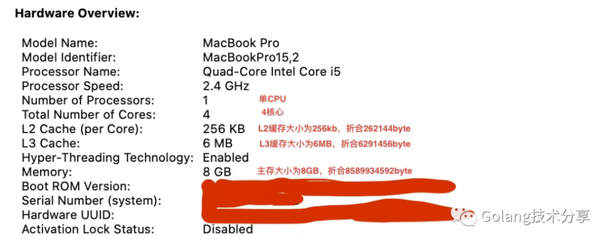
但是，这里没有展示出L1 Cache及其缓存行的大小，我们可通过以下命令方式获取，得知本机的缓存行大小为64字节。
1 | 1$ sysctl -a | egrep 'cachesize|cachelinesize' |
这意味着，如果处理器需要拷贝一个int64类型组成的Go切片到缓存中时，它会单次一起拷贝8个元素，而不是单个拷贝。如果我们的程序能让数据是以连续内存的方式存储（例如数组），这样当处理器访问数据元素时，缓存命中率就会很高。通过减少从内存中读取数据的频率，从而提高程序的性能。
缓存行在Go程序中的具体应用
来看一个具体的例子，该例为我们展示了利用CPU缓存带来的好处。
1 | 1func createMatrix(size int) [][]int64 { |
在上述的代码中，有两个6400*6400的初始化数组矩阵A和B，将A和B的元素进行相加，第一种方式是对应行列坐标相加，即matrixA[i][j] = matrixA[i][j] + matrixB[i][j]，第二种方式是对称行列坐标相加，即matrixA[i][j] = matrixA[i][j] + matrixB[j][i]。那这两种不同的相加方式，会有什么样的结果呢？
1 | 1BenchmarkMatrixCombination-8 16 67211689 ns/op |
可以看到，两种相加方式，性能差异竟然接近十倍，这是为什么呢？
接下来，我们通过几幅图来更直观地理解中间发生了什么。蓝色圆圈代表矩阵A的当前元素坐标，粉红色圆圈代表了矩阵B的当前元素坐标。在第二种相加方式中，由于程序的操作是 matrixA[i][j] = matrixA[i][j] + matrixB[j][i] ，所以当矩阵A的元素坐标为 (4,0) 时，矩阵B对应的元素坐标就是 (0,4)。
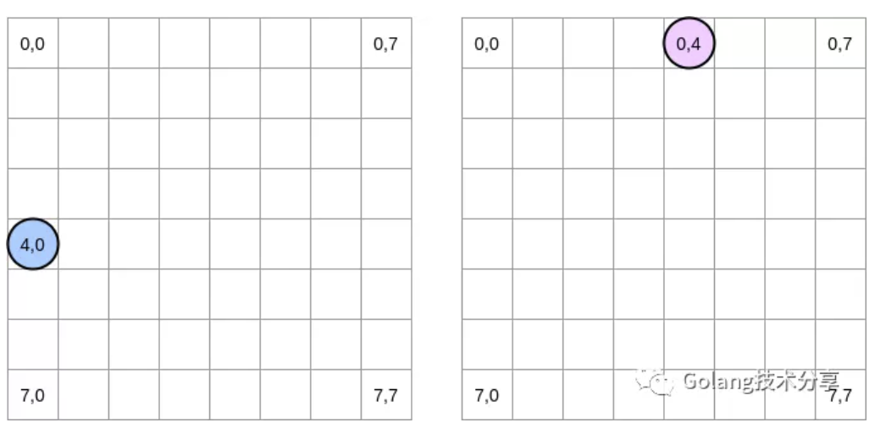
注：**在此图中，我们用横坐标和纵坐标表示矩阵，并且（0,0）代表是矩阵的左上角坐标。在实际的计算机存储中，一个矩阵所有的行将会被分配到一片连续的内存上。不过为了更直观地表示，我们这里还是按照数学的表示方法。**
此外，在此后的示例中，我们将矩阵大小设定为缓存行大小的倍数。因此，缓存行不会在下一行“超载”。
我们如何在两个矩阵中遍历的？
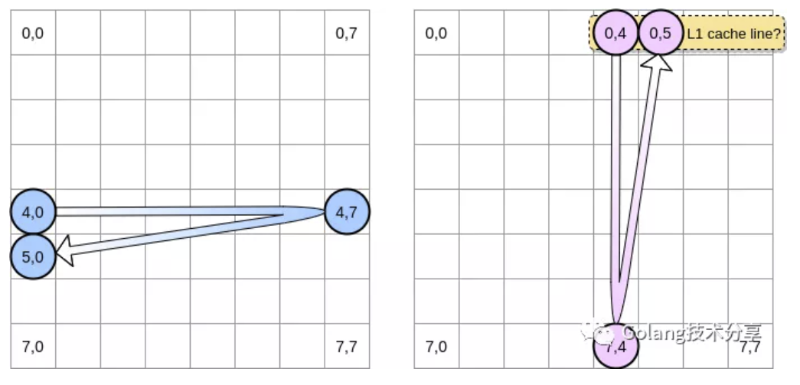
蓝色圆圈向右移动，直到到达最后一列，然后移动到位置（5,0）的下一行，依此类推。相反地，红色圆圈向下移动，然后转到下一列。
当粉红色圆圈在坐标 (0,4) 之时，处理器会缓存指针所在那一行 (在这个示意图里，我们假设缓存行的大小是 4 个元素)。因此，当粉红色圆圈到达坐标 (0,.5) 时，我们可以认为该坐标上的变量已经存在与L1 cache中了吗？这实际上取决于矩阵的大小。
如果矩阵的大小与L1 Cache的大小相比足够小，那么答案是肯定的，坐标 (0,5)处的元素已经在L1 Cache中。否则，该缓存行就会在访问坐标 (0,5) 之前就被清出 L1。此时，将会产生一个缓存缺失，然后处理器就不得不通过别的方式访问该变量 (比如从 L2 里去取)。此时，程序的状态将会是这样的：
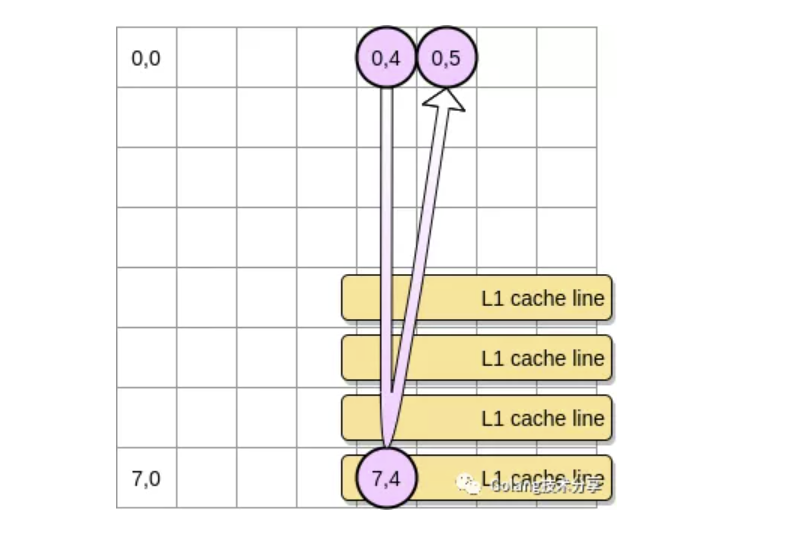
那么，矩阵的大小应该是多大才能从充分利用L1 Cache呢？让我们做一些数学运算。
1 | 1$ sysctl hw.l1dcachesize |
以小菜刀的机器为例，L1 的数据缓存大小为32kb。但L1缓存行的大小为64字节。因此，我可以在L1 数据缓存中存储多达512条缓存行。那么，我们如果将上例中的矩阵大小matrixLength改为512会怎样？以下是基准测试结果。
1 | 1BenchmarkMatrixCombination-8 3379 360017 ns/op |
尽管我们已经将两中测试用例的性能差距缩小了很多 (用 6400 大小的矩阵测的时候，第二个要慢了大约 700%)，但我们还是可以看到会有明显的差距。那是哪里有问题呢？
在基准测试中，我们处理的是两个矩阵，因此CPU必须为两者均存储缓存行。在完全理想的环境下（在压测时没有其他任何程序在运行，但这是肯定不可能的），L1缓存将用一半的容量来存储第一个矩阵，另外一半的容量存储第二个矩阵。那我们再对两个矩阵大小进行4倍压缩，即matrixLength为128（原文中是256时接近相等，但在小菜刀机器上实测是128个元素才接近相等），看看此时的基准测试情况。
1 | 1BenchmarkMatrixCombination-8 64750 17665 ns/op |
此时，我们终于到达了两个结果（接近）相等的地步。
通过上面的尝试，我们应该知道在处理大容量矩阵时，应该如何减少CPU缓存带来的影响。这里介绍一种循环嵌套优化的技术（loop nest optimization）：在遍历矩阵时，每次都以一个固定大小的矩阵块为单位来遍历，以此最大化利用CPU缓存。
在以下示例中，我们将一个矩阵块定义为4*4元素大小。在第一个矩阵中，我们从 (4,0) 遍历至 (4,3)，然后再切换到下一行。在第二个矩阵中从 (0,4) 遍历至 (3,4) ，然后切换到下一列。
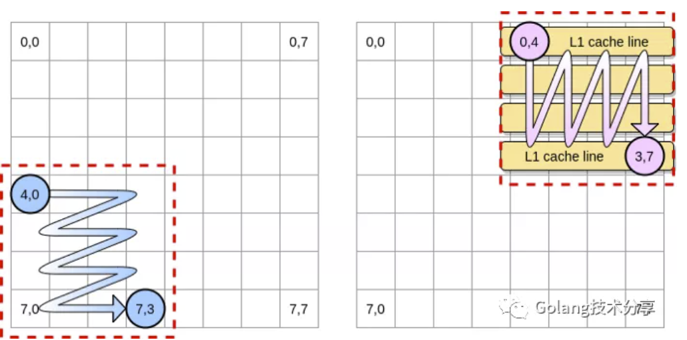
当粉红色圆圈遍历完第一列时，处理器将相应的所有存储行都存储到L1中去了。因此，对矩形块其他元素的遍历就是直接从L1里访问了，这能明显提高访问速度。
我们将上述技术通过Go实现。首先，我们必须谨慎选择块的大小。在前面的示例中，我们矩阵一行元素的内存大小等于缓存行的容量。它不应该比这再小了，否则的话我们的缓存行中会存储一些不会被访问的元素数据，这浪费缓存行的空间。在Go基准测试中，我们存储的元素类型为int64（8个字节）。因为缓存行的大小是64字节，即8个元素大小。那么，矩形块的大小应该至少为8。
1 | 1func BenchmarkMatrixReversedCombinationPerBlock(b *testing.B) { |
此时matrixLength为6400，它与最初直接遍历的方式相比结果如下。
1 | 1BenchmarkMatrixReversedCombinationPerBlock-8 6 184520538 ns/op |
可以看到，通过加入小的遍历矩形块后，我们的整体遍历速度已经是最初版本的3倍了，充分利用CPU缓存特性能够潜在帮助我们设计更高效的算法。
缓存一致性与伪共享问题
\Cache Coherency\ & **False Sharing****
注意，第一个例子呈现的是一个单线程程序，当使用多线程时，我们会遇到缓存伪共享的问题。首先，理解伪共享，需要先理解缓存一致性。
假设有一个双核CPU，两个核心上并行运行着不同的线程，它们同时从内存中读取两个不同的数据A和B，如果这两个数据在物理内存上是连续的（或者非常接近），那么就会出现在两个核心的L1 Cache中均存在var1和var2的情况。
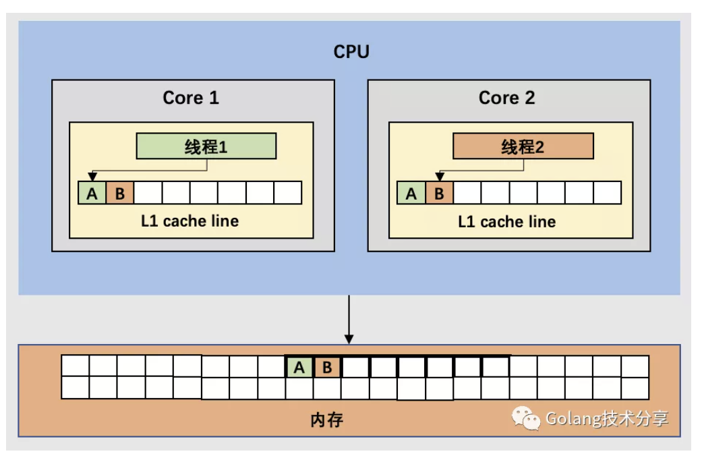
通过前文我们知道，为了提高数据访问效率，每个CPU核心上都内嵌了一个容量小，但速度快的缓存体系，用于保存最常访问的那些数据。因为CPU直接访问内存的速度实在太慢，因此当数据被修改时，处理器也会首先只更改缓存中的内容，并不会马上将更改写回到内存中去，那么这样就会产生问题。
以上图为例，如果此时两个处于不同核心的线程1和线程2都试图去修改数据，例如线程1修改数据A，线程2修改数据B，这样就造成了在各缓存之间，缓存与内存之间数据均不一致。此时在线程1中看到的数据B和线程2中看到的数据A不再一样（或者如果有更多核上搭载的线程，它们从内存中取的还是老数据），即存在脏数据，这给程序带来了巨大隐患。因此有必要维护多核的缓存一致性。
缓存一致性的朴素解决思想也比较简单：只要在多核共享缓存行上有数据修改操作，就通知所有的CPU核更新缓存，或者放弃缓存，等待下次访问的时候再重新从内存中读取。
但很明显，这样的约束条件会对程序性能有所影响，目前有很多维护缓存一致性的协议，其中，最著名的是Intel CPU中使用的MESI缓存一致性协议。
MESI协议
理解MESI协议前，我们需要知道的是：所有cache与内存，cache与cache之间的数据传输都发生在一条共享的数据总线上，所有的cpu核都能看到这条总线。
MESI协议是一种监听协议，cahce不但与内存通信时和总线打交道，同时它会不停地监听总线上发生的数据交换，跟踪其他cache在做什么。所以当一个cache代表它所属的cpu核去读写内存，或者对数据进行修改，其它cpu核都会得到通知，它们以此来使自己的cache保持同步。
MESI的四个独立字母是代表Cache line的四个状态，每个缓存行只可能是四种状态之一。在缓存行中占用两比特位，其含义如下。
- Modified（被修改的）：处于这一状态的数据只在本核处理器中有缓存，且其数据已被修改，但还没有更新到内存中。
- Exclusive（独占的）：处于这一状态的数据只在本核处理器中有缓存，且其数据没有被修改，与内存一致。
- Shared（共享的）：处于这一状态的数据在多核处理器中都有缓存。
- Invalid（无效的）：本CPU中的这份缓存已经无效了。
还是通过上述例子，一起来看处理器是如何通过MESI保证缓存一致性的。
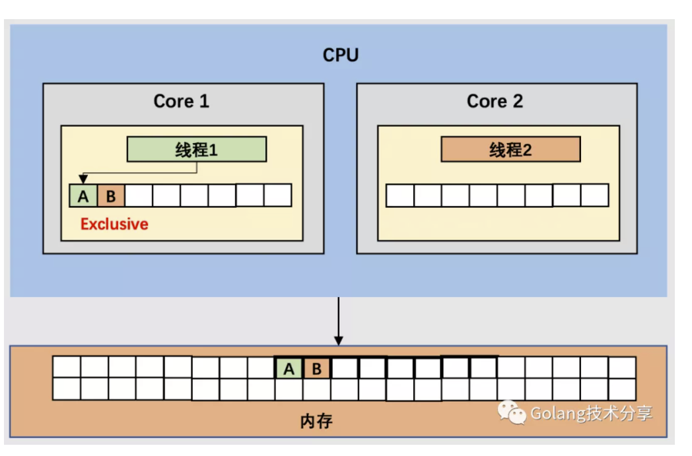
- 假设线程1首先读取数据A，因为按缓存行读取，且A和B在物理内存上是相邻的，所以数据B也会被加载到Core 1的缓存行中，此时将此缓存行标记为Exclusive状态。
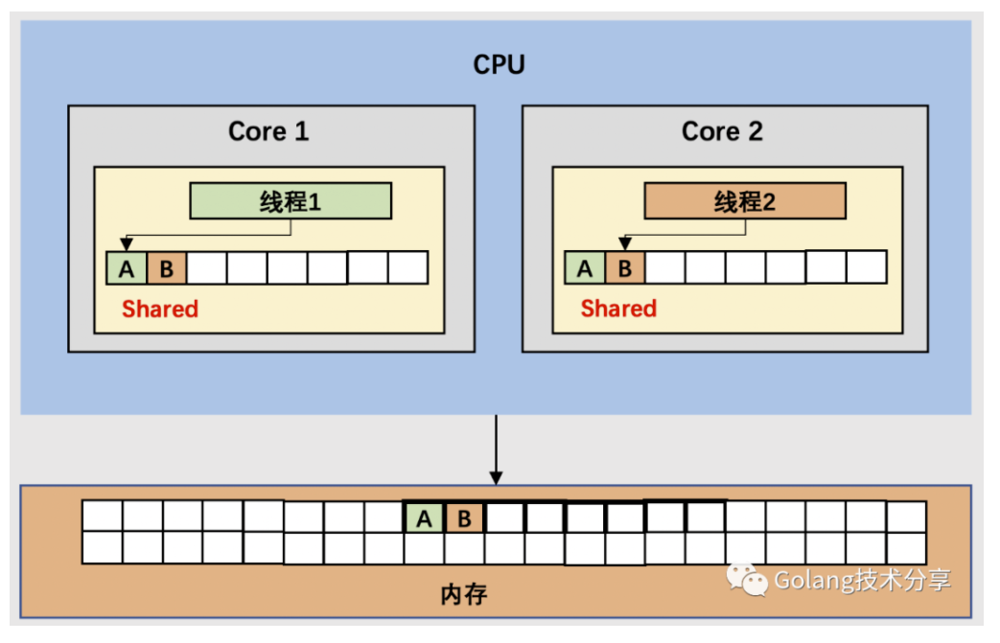
- 接着线程2读取数据B，它从内存中取出了数据A和数据B到缓存行中。由于在Core 1中已经存在当前数据的缓存行，那么此时处理器会将这两个缓存行标记为Shared状态。
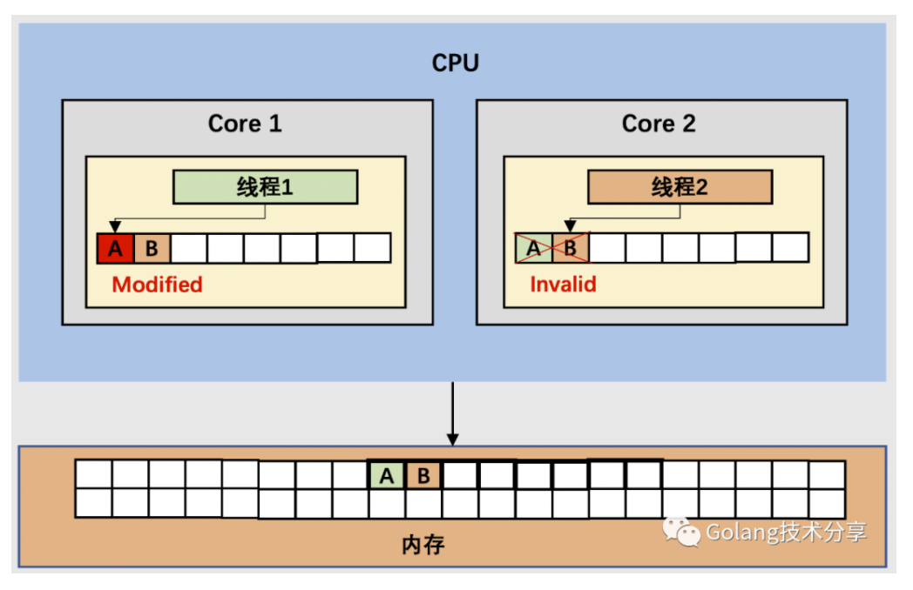
- Core1 上的线程1要修改数据A，它发现当前缓存行的状态是Shared，所以它会先通过数据总线发送消息给Core 2，通知Core 2将对应的缓存行标记为Invalid，然后再修改数据A，同时将Core 1上当前缓存行标记为Modified。
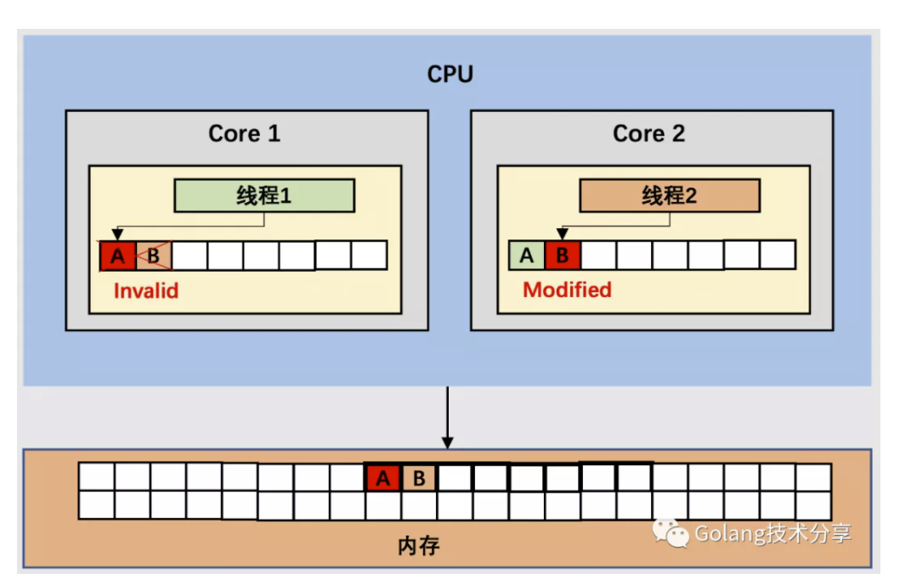
- 此后，线程2想要修改数据B，但此时Core2 中的当前缓存行已经处于Invalid状态，且由于Core 1当中对应的缓存行也有数据B，且缓存行处于Modified状态。因此，Core2 通过内存总线通知Core1 将当前缓存行数据写回到内存，然后Core 2再从内存读取缓存行大小的数据到Cache中，接着修改数据B，当前缓存行标记为Modified。最后，通知Core1将对应缓存行标记为Invalid。
所以，可以发现，如果Core 1和 Core2 上的线程持续交替的对数据A和数据B作修改，就会重复 3 和 4 这两个步骤。这样，Cache 并没有起到缓存的效果。
虽然变量 A 和 B 之间其实并没有任何的关系，但是因为归属于一个缓存行 ，这个缓存行中的任意数据被修改后，它们都会相互影响。因此，这种因为多核线程同时读写同一个 Cache Line 的不同变量，而导致 CPU 缓存失效的现象就是伪共享。
内存填充
那有没有什么办法规避这种伪共享呢？答案是有的：内存填充（Memory Padding）。它的做法是在两个变量之间填充足够多的空间，以保证它们属于不同的缓存行。下面，我们看一个具体的例子。
1 | 1// 这里M需要足够大，否则会存在goroutine 1已经执行完成，而goroutine 2还未启动的情况 |
在该例中，我们相继实例化了两个结构体对象structA和structB，因此，这两个结构体应该会在内存中被连续分配。之后，我们创建两个goroutine，分别去访问这两个结构体对象。
structA上的变量n被goroutine 1访问，structB上的变量n被goroutine 2访问。然后，由于这两个结构体在内存上的地址是连续的，所以两个n会存在于两个CPU缓存行中（假设两个goroutine会被调度分配到不同CPU核上的线程，当然，这不是一定保证的），压测结果如下。
1 | 1BenchmarkStructureFalseSharing-8 538 2245798 ns/op |
下面我们使用内存填充：在结构体中填充一个为缓存行大小的占位对象CacheLinePad。
1 | 1type PaddedStruct struct { |
然后，我们实例化这两个结构体，并继续在单独的goroutine中访问两个变量。
1 | 1// 这里M需要足够大，否则会存在goroutine 1已经执行完成，而goroutine 2还未启动的情况 |
在CPU Cache中，内存分布应该如下图所示，因为两个变量之间有足够多的内存填充，所以它们只会存在于不同CPU核心的缓存行。
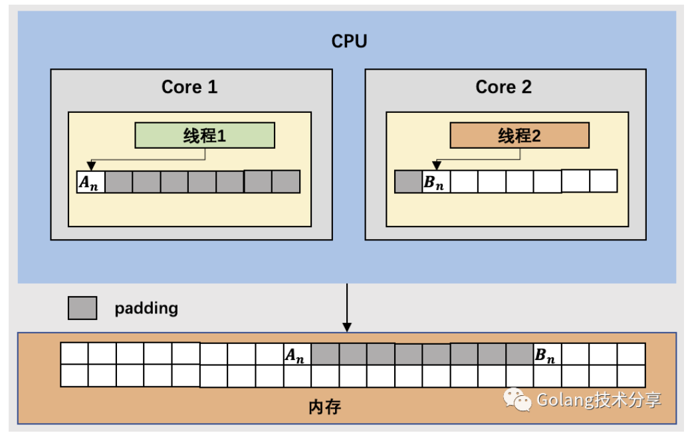
下面是两种方式的压测结果对比
1 | 1BenchmarkStructureFalseSharing-8 538 2245798 ns/op |
可以看到，在该例中使用填充的比最初的实现会快30%左右，这是一种以空间换时间的做法。需要注意的是，内存填充的确能提升执行速度，但是同时会导致更多的内存分配与浪费。
结语
机械同理心（Mechanical sympathy）是软件开发领域的一个重要概念，其源自三届世界冠军 F1赛车手 Jackie Stewart 的一句名言：
You don’t have to be an engineer to be a racing driver, but you do have to have Mechanical Sympathy. （若想成为一名赛车手，你不必成为一名工程师，但必须要有机械同理心。）
了解赛车的运作方式能让你成为更好的赛车手，同样，理解计算机硬件的工作原理能让程序员写出更优秀的代码。你不一定需要成为一名硬件工程师，但是你确实需要了解硬件的工作原理，并在设计软件时考虑这一点。
现代计算机为了弥补CPU处理器与主存之间的性能差距，引入了多级缓存体系。有了缓存的存在，CPU就不必直接与主存打交道，而是与响应更快的L1 Cache进行交互。根据局部性原理，缓存与内存的交换数据单元为一个缓存行，缓存行的大小一般是64个字节。
因为缓存行的存在，我们需要写出缓存命中率更高的程序，减少从主存中交换数据的频率，从而提高程序执行效率。同时，在多核多线程当中，为了保证缓存一致性，处理器引入了MESI协议，这样就可能会存在CPU 缓存失效的伪共享问题。最后，我们介绍了一种以空间换时间的内存填充做法，它虽然提高了程序执行效率，但也造成了更多的内存浪费。